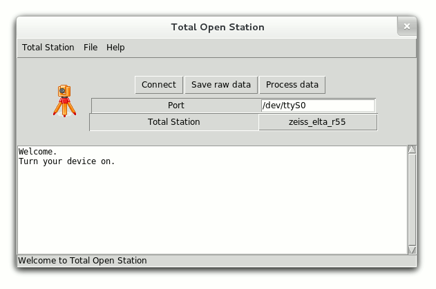

Total Open Station (TOPS) downloads survey data from total stations on your computer, from almost any operating system.
Data you download can be archived as is, and exported to exchange formats (CSV, DXF, GeoJSON, ...) for use in CAD or GIS software.
The program is written with simplicity in mind, it is very small and fast.
Total Open Station is a stand-alone Python application. It comes already packaged in Debian, Ubuntu and OpenSUSE. Others (including Windows users) can get it from the Python package index, or install it directly with:
pip install totalopenstationMore detailed instructions are available in the user documentation.
That's it. You can review raw data immediately, save it to an ASCII file for later processing, or export directly to an exchange format.
If you have a lot of data to process, or you're more technically
inclined, the same features are available as command-line programs
or a programming library (just import
totalopenstation in your app).
Your total station model or preferred format is not supported yet? Total Open Station is open source, you can help adding it.
If you still find yourself unable to use the program as you would like, get in touch with us.
Total Open Station is a IOSA project.